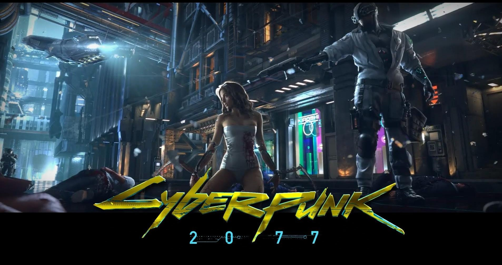
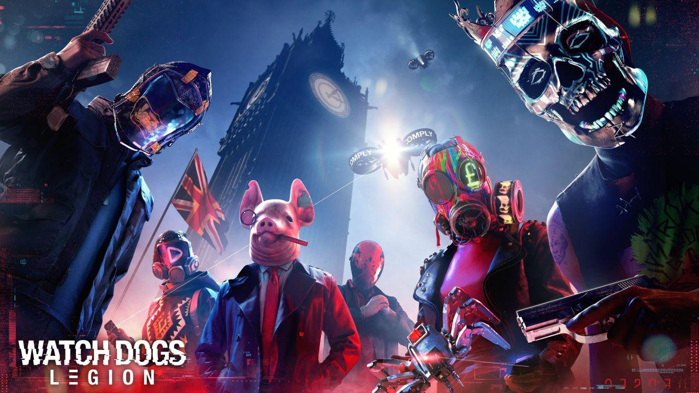
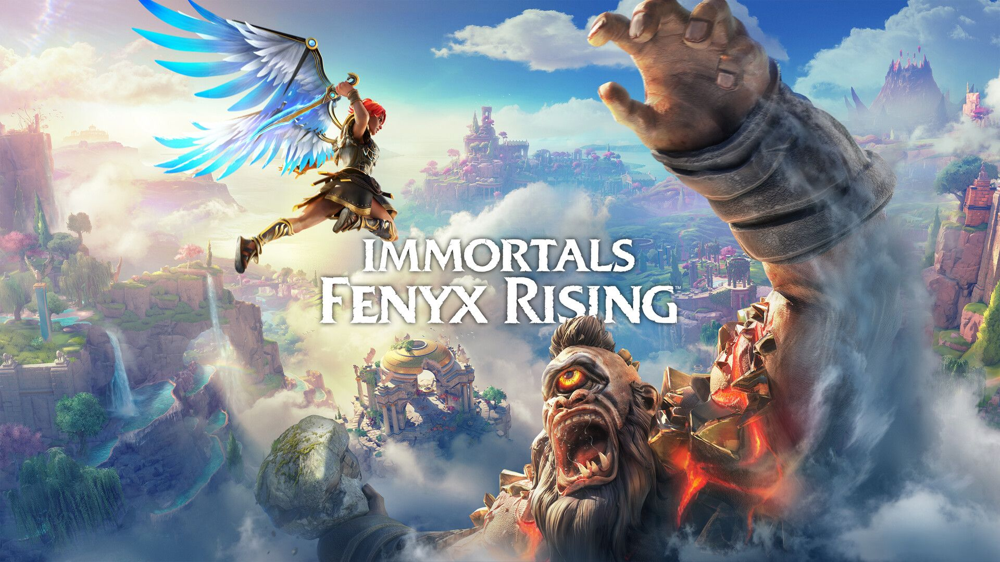
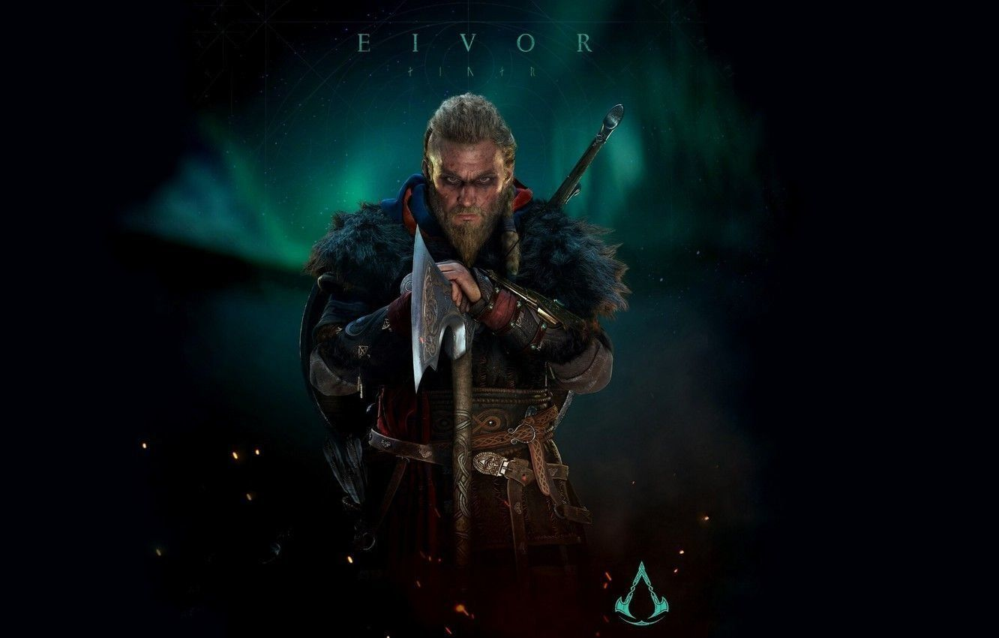
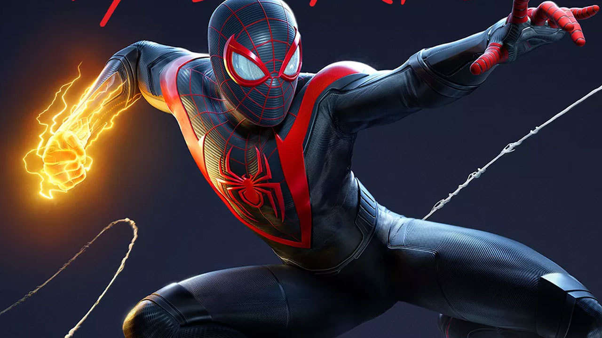

Upcoming November/December Games 2020
Review Date: 28/10/2020
2020. A year we all want to forget. A year that changed the way we live, work and do everything forever.
But there is a silver lining. It is probably the biggest year for … drumroll please … GAMING.
Yes, 22 days till the glorious and long-awaited release of the PlayStation 5 and 14 days before the
release of the Xbox Series X and S. But since I am a PlayStation fanboy, hell even the word gaming in my
logo is in the PS colours, I’m going to stick with the PS5. But along with the next generation of badass
consoles, comes a whole bunch of badass, epic games. Now are you ready for this? Because I am about to
hype the hell out of you. So, grab some popcorn, put the reading glasses on, and let’s see what is
coming in the next 5 weeks.
Cyberpunk 2077

First up, let’s tackle CD Projekt Red’s breathtaking game. Delayed, again … till 10 December. Some people
are saying it’s only going to be released in 2077 and after experiencing The Witcher 3, I can wait for a
game that is going just as good, maybe even better.
Night City is waiting, Keanu Reeves is waiting, my custom character with custom genitalia is waiting.
Don’t ask me why you can customize your family jewels, you just can. Go with it, don’t argue. It’s a CD
Projekt Red game and they are probably one of the few respected developers left out there. They are
delaying the game once again to ensure that the cross-generational gameplay is smooth and somewhat bug
free. And that deserves massive respect. The game is gone gold, but they still want to make sure the
players experience something amazing.
The game has so much content from choosing your starting archetypes or where you start in the game by
choosing one of three life choices. There is so much thought and storytelling gone into this game, I
honestly don’t know what to write. So, till I experience it for myself … I’m just going to wait.
Watch Dogs Legion

You can play as anyone. Let me say that again, you can play as ANYONE!!!!!!! Ubisoft’s open world hacking
game is back, and probably bigger than ever. Watch Dogs Legion is in London baby. Freaking London!!!!!!
For those who know me, I love London. I was in London a couple years back for a quick holiday, and 50%
of the reason that I went was for shoes. Yeah yeah, I know, judge me if you must, I don’t care. But
that’s a post for the fashion side. This is gaming.
Back to Watch Dogs and the fact that you can play as anyone. Never thought that Ubisoft would nail it,
but from what it seems like, they pretty much did. So, kudos Ubisoft! This is a game I cannot wait to
get my hands on. I have been a huge Watch Dogs fan since the first game with “The Fox”, Aiden Pierce,
and although people were upset because of weather and textured effects were missing, it didn’t bother
me. Watch Dogs 2 in San Francisco was even better, and when Legion was announced and in London, I damn
near cried. And the reason these games are a personal favourite is for the premise, hack everything and
everyone. Honestly, if we are not careful, this is exactly what the future holds. Tech is the future,
but how we use it and how companies use it … that will be the deciding factor.
Seriously, how do I keep getting off track about the game?? Damn I really am rusty. But anyways, let’s
wrap this up. Watch Dogs Legion is looking to be a great game, boasting around 25-30 hours of gameplay
before any online play is available, which is pretty decent for today’s games. So, if you’re not
completely convinced about the game, wait a bit till I get my copy, and let me review it for you and you
can decide.
Immortals Fenyx Rising

Ubisoft game number 2. Said to combine the phenomenal styles of Breath of the Wild and Assassin’s Creed
Odyssey, the game looks into Greek mythology, controlling their own customized version of Fenyx. The
game’s story looks at a stranded soldier, Fenyx rescuing the Gods from the titan Typhon … hold on one
second.
Greek gods + soldier + titans + rescuing gods … *sniff sniff* smell that? That smells like GOD OF WAR!!!
Only this time I don’t think I’ll be able to kill Zeus or rip Helios’s head clean off his shoulders.
Damn, and here I thought I could relive that murderous rampage all over again on the PS5. Yeah, yeah I
know, I’m weird. Get over it.
But the fact that it’s taking inspiration from Breath of the Wild should be indication of what is to
come. For those of you who don’t know, The Legend of Zelda: Breath of the Wild was a perfect game (10/10
rating) that was released for the Nintendo Switch in 2017 that took the world by storm. And if Ubisoft
can take their wild imaginations, and the storytelling of Assassin’s Creed Odyssey. You can consider it
bought from my end.
Assassin's Creed Valhalla

I have said this before, and I will say this again. I love Assassin’s Creed. I have the jacket, I have
the games, I have the wallpapers, the gift-wrapping paper, the soundtracks. I just love the franchise.
Even when times were tough and the games seemed to be going down the drain, Assassin’s Creed Origins
comes out and changes the whole damn view. The birth of the brotherhood … in Egypt. You can trust me
when I say, that game was fucking awesome.
Then take me to Greece and Atlantis for Assassin’s Creed Odyssey. A game I played twice over, enjoying
every second of it and honestly never tiring of it. And now, after another one-year break, Ubisoft are
taking us to the Viking era. Oh yes … Vikings are at our fingertips. The barbaric, plundering, violent,
rule-breaking, pillaging animals are ready to take us on a journey against the Anglo-Saxon English
Templars. But were the Vikings always this ruthless? It seems Ubisoft are ready to take us on journey to
show us otherwise. And I really cannot wait. I watched the announcement video live, I watched all the
trailers live. I want to control Eivor. No … I NEED to control Eivor. Sooner rather than
later,
otherwise I might go on a barbaric, violent spree.
Marvel's Spider-Man: Miles Morales

Oh yeah. Here we go. The web slinging, trail-blazing, eye-brow raising, black suited, electrokinesis,
invisibility … yes people I am talking about Spider-Man. And no, not the uncle-less Peter Parker, but
the badass Miles Morales. Bitten by a slightly different genetically modified spider, Miles was
introduced to us in the first Spider-Man game, which was awesome. Don’t believe me? Read my review for
it here.
But what seemed like a never ending 2 years, the web slinger is back, better than ever. Insomniac Games
have taken advantage of the next generation console to make the game, faster, better and just damn sexy.
Back in New York City, a year after the events of Marvel’s Spider-Man, Miles has trained under Peter and
now has to balance life as Spider-Man, supporting his mother’s campaign for City Council and a gang war
brewing in Harlem and New York between a criminal army and Roxxon Energy Corporation. That’s a lot to
handle, hopefully I can help Miles do a better job at balancing his life, than I am right now balancing
working from home and playing games. Damn I have a hard life.
Anyways, Spider-Man is looking to be epic beyond our imagination and ready to kick names and take butts.
No, that doesn’t sound right, oh dammit you know what I mean people.
Those are my games that I have ordered and am looking forward to playing over the next two months. As always, stay safe people. Wear a mask, wash your hands, follow social distancing and for the love of god stay sane. Till next time, JoKishler out! (╯°□°）╯︵ ┻━┻)